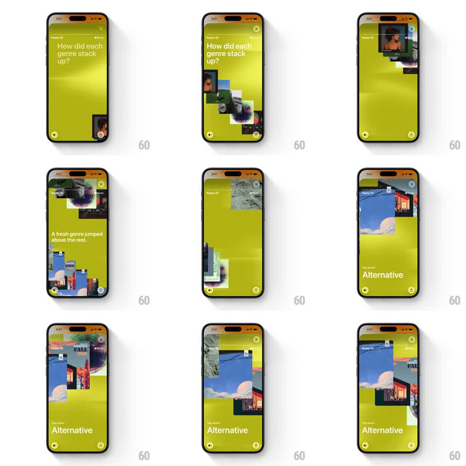

Media
Frame-by-frame

Rebuild this animation 1:1: Apple Music Replay '25 genre story - genre art cards stack upward from the bottom edge into a climbing pile under "How did each genre stack up?", then the pile parts as "A fresh genre jumped above the rest." and the top-genre card ("Alternative") rises into a hero slot.

Rebuild this animation 1:1: Apple Music Replay '25 genre story - genre art cards stack upward from the bottom edge into a climbing pile under "How did each genre stack up?", then the pile parts as "A fresh genre jumped above the rest." and the top-genre card ("Alternative") rises into a hero slot.
## Integration
Integration: stack-agnostic spec - springs given as stiffness/damping, timed motions as duration + curve; map every value to your framework and animation library of choice.
## Scene
Yellow-green (chartreuse) story screen with Replay '25 chrome. Phase 1: headline "How did each genre stack up?" while square genre artwork cards enter from the bottom-right and stack upward, each card overlapping the previous, climbing toward the top of the screen. Phase 2: headline swaps to "A fresh genre jumped above the rest." as the stack spreads. Phase 3: the winning genre's collage artwork fills the upper area with "Top Genre" label and "Alternative" title anchored lower-left.
## Motion spec
Pattern: auto-playing card stack + hero rise, ~4s.
- Stack: cards fly in from the bottom edge one at a time (400ms each, ease-out, 120ms cadence), each landing on top of the pile with a slight random rotation (-6deg..6deg) and a soft scale settle (1.05 -> 1).
- Climb: the pile's anchor moves up as cards accumulate so the stack ascends the screen.
- Copy flip: first headline fades up and out, second fades in (250ms each).
- Hero rise: the top card lifts from the pile (spring ~260/18), scales to ~60% width, and its artwork expands into the genre collage while "Top Genre" + genre name fade/slide in below (300ms).
## Calibration
- Cards enter fast enough to feel like dealing, not drifting - keep the cadence tight.
- Randomize rotations once per card; re-randomizing mid-flight looks like jitter.
## Reduced motion
Cards fade in already stacked (250ms), then cross-fade to the hero layout (300ms).
## Don't miss
- The chartreuse background is specific to the genre story - don't borrow the blue or magenta from sibling stories.
- The hero genre card keeps the pile's artwork language (photo collage), just larger.